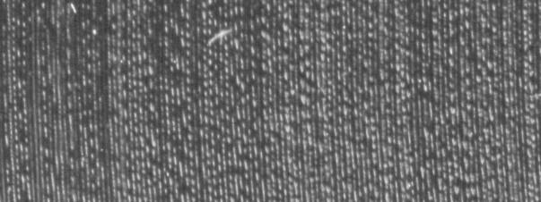

Remember those flat round things you may have found lying around the
house. Those that never
really worked well as flying saucers? Well, the other day I happenned to have a good
look at one through a magnifying glass. I was able to discern something waveform'esqe
in the
shape of the groove. I thought, "groovy, there must be a way to extract something
sensible off of that" (actual thought quoted). At which point I came up with some
great excuses ^H^H^H reasons to have a go:
A) These round objects could have some archeological value.
B) I could waste some time.
Happily convinced by these, I tried to recall an old legend I once heard
concerning these objects. This legend being of technological nature,
entaled a diamond needle that would vibrate when placed atop the
revolving flat things, these vibrations, when amplified would produce music.
When scanned, some records seemed much denser than others.
Dense tracks were much harder to follow.
Vivaldi's "The Four Seasons" was fine
When illuminated in parallel with the groove's direction
some sort of depth-modulation became visible.

This made me guess that one of the stereo channels might be encoded
in the depth/angle plane while the other was encoded in the radius/angle plane,
the later being the one I initially noticed.
The nature of my scanner and of the records reflectiveness
caused only the lower half of the record's radius/angle modulation
to be exposed on each scan.
Thus, to supply the virtual gramophone at least one complete revolution of the record,
four regions had to be separately scanned. These were later stitched together to
form an image of several complete inner tracks of the record.
Once the image was ready, writing the decoder was very simple.
All it did was rotate a "needle" around a given center at some predefined angular
velocity, attempting to keep track of the groove the needle was initially positioned
on.
The offsets (dr) between this track and the basic radial were bunched into a sequence
of
samples.
these were later converted into wav files.
Here are the few nearly-intelligible decodings that I managed to recover off of
the inner tracks of Vivaldi's "The Four Seasons".
Listening to the following reference recording might allow you to recognize
these as the music-within-noise they actually are!!! (I guess a highly imaginative
listener is
required too).
7/9/2002 - Woke up, fell out of bed... rampaged by a slashdot horde.
Some clarifications to the slashdot crowd:
The whole thing was done in a couple of late nights so I didn't really
have much time to gather all the technical details concerning phonograph
modulations. Moreover, the "archeological" reverse-engineering aspect was part
of the fun.
I now know (thanks to some great replies) that the horizontal modulation (the only
one I did decode) is a combination of the left/right audio channels (which are each
encoded on the sides of a V-shaped groove).
Some repliers seemed to be a tad confused as to what recordings were
the actual decodings. I'd like to stress that gramophone3.mp3 is a recording
while the rest (dneedle*) were decoded from the image.